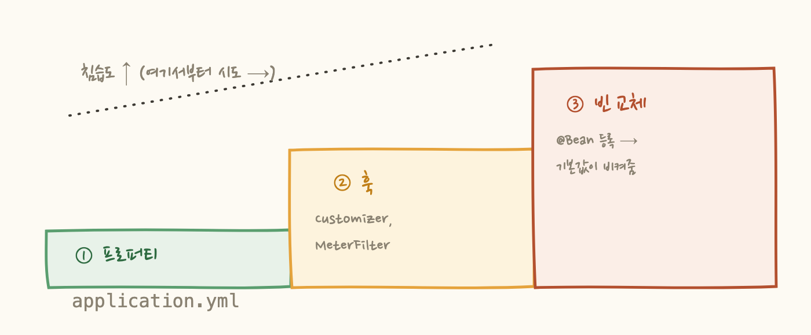

2편. 미터의 해부학 : 게이지는 체중계, 카운터는 가계부
3편. 집계의 함정 : 평균의 평균은 평균이 아니다
회의실에서 누군가 말합니다. "모니터링 비용이 너무 나오는데, 다른 벤더로 갈아타면 어때요?" 잠시 침묵이 흐르고, 시니어 개발자가 조용히 답해요. "계측 코드가 코드베이스 전체에 박혀 있어요. 수백 군데를 걷어내고 다시 심어야 해요." 회의는 그렇게 끝납니다. 갈아탈 수 없다면, 협상력도 없어요.
이게 계측 락인(lock-in)입니다. 그리고 JVM 세계에서 이 문제에 대한 답이 Micrometer예요. 공식 문서의 첫 문장이 이 글의 제목이자 결론입니다 — "Think SLF4J, but for metrics." Micrometer는 메트릭의 파사드(facade)다. 이 한 문장에서 나머지 전부가 연역돼요.
1. 파사드: 정면만 보여주는 건물
파사드는 건축 용어로 건물의 "정면"이에요. 뒤가 어떻게 생겼든, 앞면 하나로 통일해서 보여주는 것. 코드로 옮기면 이렇게 됩니다 — 애플리케이션은 중립 API라는 정면만 바라보고, 그 뒤에 어떤 백엔드가 서 있는지는 모르게 하는 거예요.

로깅의 SLF4J가 정확히 같은 구조예요. 코드는 log.info()만 알고, 뒤에 Logback이 오든 Log4j가 오든 신경 안 쓰죠. Micrometer는 그 아이디어를 메트릭에 적용한 겁니다. 파사드가 뒤에서 흡수하는 차이는 생각보다 많아요 — 메트릭 이름 관례(http.server.requests를 프로메테우스에는 http_server_requests로 번역), 히스토그램 포맷(일반 vs 누적), 전송 방식(push vs pull)까지 전부요.
2. 그런데 "공짜 메트릭"은 누가 주는 걸까
스프링 부트에서 registry 의존성만 넣으면 HTTP 요청, JVM 힙, 커넥션 풀 메트릭이 알아서 나옵니다. 여기서 흔한 오해가 생겨요 — "Micrometer가 자동으로 해주는구나." 아니에요. Micrometer 자체는 아무것도 계측하지 않아요. micrometer-core는 Counter, Timer 클래스와 registry 인터페이스만 주는 순수 라이브러리예요.
자동의 주인공은 Spring Boot Actuator입니다. Actuator 안에는 스프링 팀이 미리 짜둔 계측기 카탈로그가 들어있고, classpath를 보고 해당되는 걸 자동으로 켜요. 웹 스타터가 있으면 HTTP 계측, HikariCP가 있으면 풀 계측, 이런 식으로요.
계측 방식이 우아해요. 모든 HTTP 요청이 지나가는 서블릿 필터를 길목에 하나 세워두는 겁니다:
여기서 /users/{id}에 주목하세요. /users/123과 /users/456은 같은 코드가 실행되니까, 집계의 올바른 단위는 개별 URL이 아니라 코드 경로예요. raw URL로 태깅하면 태그 조합 수가 폭발해서 비용이 터지고(카디널리티 문제), 같은 경로의 통계가 수만 조각으로 쪼개져 p95도 무의미해져요. 그리고 이 템플릿은 앱 안에서만 아는 정보입니다 — 스프링의 핸들러 매핑이 라우팅을 해봐야 아는 거라서, 프로세스 밖에서 훔쳐보는 도구들은 흉내낼 수 없는 화이트박스 계측의 이점이에요.
• registry 구현체 : 특정 백엔드로의 어댑터 (바퀴)
• Actuator : 자동 배선 + 내장 계측기 + /actuator 엔드포인트 (완성차 조립)
스프링 없이 micrometer-core만 쓰면? 공짜는 없다. JVM 메트릭도 손으로 바인딩해야 한다.
3. 레지스트리가 정확하게 하는 일
파사드의 심장은 MeterRegistry예요. "우편함"이라고 부르기 쉬운데, 실제로는 네 가지 일을 합니다. 카운터 호출 하나의 여정을 따라가 보면:

①에서 조직의 태그 정책이 집행되고(2편에서 자세히), ②의 장부가 "태그 조합 = 시계열 = 과금 단위"의 실체이고, ③ 덕분에 요청량만큼 네트워크가 터지지 않고, ④에서 push(60초마다 발사)냐 pull(긁힐 때까지 대기)이냐가 구현체에 따라 갈려요. 그리고 명확히 할 것 하나 — registry는 측정하지 않아요. 언제 뭘 잴지는 계측 코드(Actuator 필터, 여러분의 코드)가 정하고, registry는 받은 것을 관리·집계·수출할 뿐입니다.
4. 커스터마이징: 코드 수정이 아니라 구성 수정
기본값이 마음에 안 들면? 스프링은 프레임워크 코드를 고치게 하는 대신 끼어들 구멍을 3단계로 뚫어놨어요. 침습도가 낮은 것부터:
③이 재밌는 지점이에요. Actuator의 자동 구성 빈들은 전부 @ConditionalOnMissingBean으로 선언돼 있어요 — "사용자가 같은 타입 빈을 안 만들었을 때만 내 기본값을 쓴다." 그래서 여러분이 빈을 등록하는 순간 스프링이 조용히 물러납니다. 오버라이드라기보다 "기본값이 스스로 비켜주는 자리"에 가까워요.

순서도 ① → ② → ③으로 시도하는 게 좋아요. 프로퍼티로 되면 그게 최선이고, 빈 교체는 강력하지만 스프링 업그레이드 때 기본 구현이 바뀌면 따라가야 하는 유지보수 비용이 생기거든요. 셋의 공통점은 하나 — 프레임워크 코드는 한 줄도 안 고치고, 앱이 조립되는 구성 정보만 수정한다. "동작은 코드에, 선택은 구성에" — 파사드 철학이 커스터마이징에도 그대로 흐르는 거예요.
5. "파사드다"에서 전부 연역된다
이 글 제목이 왜 좋은 문장이냐면, Micrometer의 이상해 보이는 설계들이 전부 이 한 문장에서 풀리기 때문이에요.
왜 공용 태그 표준을 강제하지 않을까? 파사드니까요. 백엔드마다 관례가 다르고(태그를 아예 지원 안 하는 계층형 백엔드도 있어요), 카디널리티 예산은 조직마다 달라요. 그래서 Micrometer는 메커니즘(commonTags, MeterFilter)만 주고 정책은 비워뒀어요 — 그 빈자리를 채우는 게 각 회사 플랫폼 팀의 일입니다.
왜 게이지는 관측 대상을 약한 참조로 쥘까? 파사드니까요. 관측 도구가 관측 대상의 수명(GC)에 개입하면 안 되죠. 감시 카메라가 피사체를 붙잡아두면 이상하잖아요.
왜 registry가 어댑터 구조일까? 파사드니까요. 정면은 하나, 뒷문은 갈아끼우는 것.
좋은 아키텍처는 이렇게 한 문장으로 압축되고, 그 문장에서 다시 풀어낼 수 있어요. 그리고 이 안목은 재사용됩니다 — SLF4J(로깅의 파사드), JDBC(DB의 파사드), OpenTelemetry API(계측 전체의 파사드), 그리고 여러분 회사의 공용 스타터(그 조직 관측성의 파사드)까지, "X는 파사드다"라고 말할 수 있는 대상을 찾는 눈이 생긴 거예요.
커스터마이징은 코드 수정이 아니라 구성 수정(프로퍼티 → 훅 → 빈 교체)이며, 공용 태그 정책의 부재부터 약참조까지 — 이 모든 설계는 "파사드다"라는 한 문장에서 연역된다.